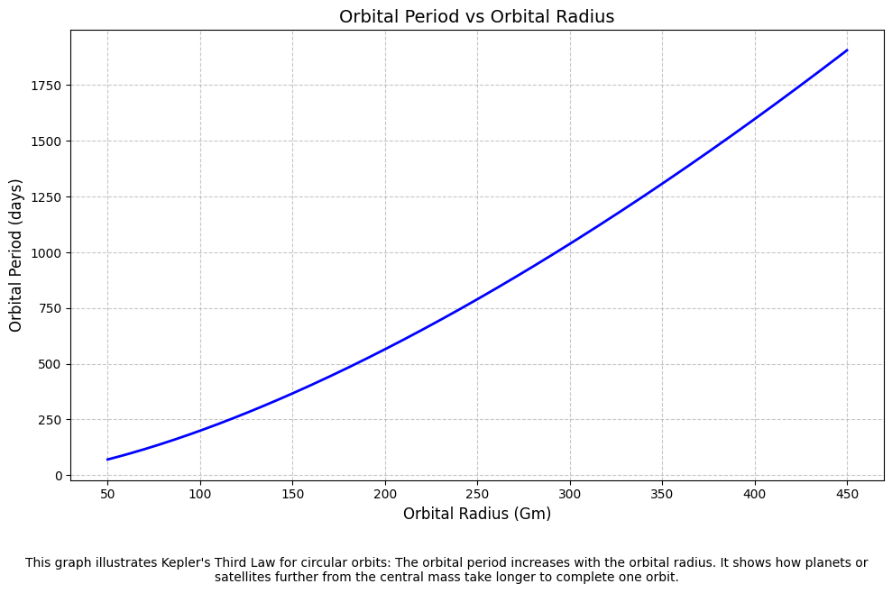
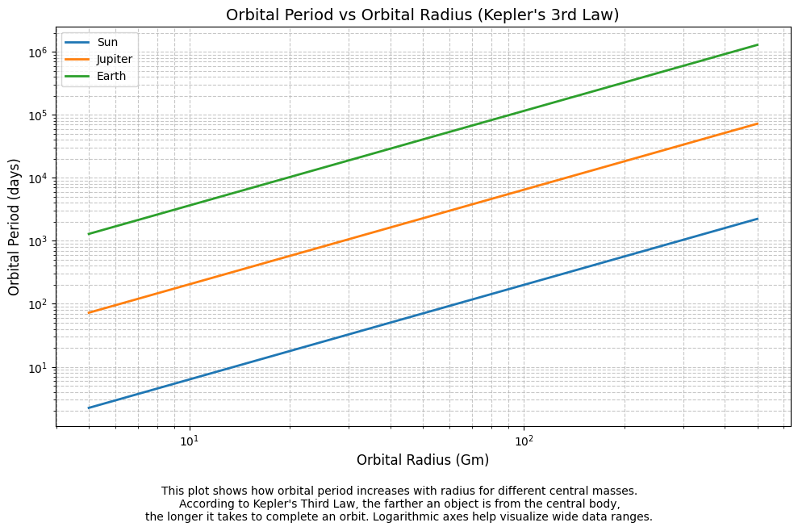

🌌 Kepler’s Third Law: Orbital Period and Orbital Radius
🎯 Motivation
- Understanding how celestial bodies move helps us decode the structure and mechanics of the universe.
- Kepler’s Third Law offers a beautifully simple way to connect gravity, motion, and distance.
- It's crucial for:
- Calculating satellite orbits
- Estimating planetary distances
- Understanding exoplanet systems
“The harmony of the worlds is made manifest in Kepler’s Laws.”
📐 The Core Idea
For circular orbits:
\[
T^2 \propto r^3
\]
Where: - \( T \) is the orbital period (time to complete one orbit) - \( r \) is the orbital radius (distance from the central body)
This means:
The square of the orbital period is proportional to the cube of the orbital radius.
🧮 Derivation of the Law
Start with Newton's law of gravity and circular motion:
\[
\frac{G M m}{r^2} = \frac{m v^2}{r}
\]
This simplifies to:
\[
v^2 = \frac{G M}{r}
\]
The orbital period \( T \) is the time it takes to complete one orbit, so we can express it as:
\[
T = \frac{2\pi r}{v}
\]
Now substitute \( v^2 \) into this equation:
\[
T^2 = \frac{4\pi^2 r^3}{G M}
\]
✅ This confirms Kepler’s law from first principles!
🌍 Real-World Examples

🌕 The Moon Around Earth
- Radius: \( 3.84 \times 10^8 \, \text{m} \)
- Period: ~27.3 days
- $ T^2 \propto r^3 $ holds true!
☀️ Planets in the Solar System
| Planet | Orbital Radius (AU) | Period (Years) | \(T^2/r^3\) |
|---|---|---|---|
| Earth | 1 | 1 | ~1 |
| Mars | 1.52 | 1.88 | ~1 |
| Jupiter | 5.20 | 11.86 | ~1 |
🌟 Conclusion: The law holds remarkably well across the solar system.
🔭 Astronomical Implications
- Planet Mass Estimation: Rearranged formula allows us to calculate the mass of the central body:
\[
M = \frac{4\pi^2 r^3}{G T^2}
\]
- Satellite Design: Engineers use this to plan communication orbits, GPS, and space station paths.
- Exoplanet Detection: Astronomers infer unseen planets’ orbits and masses using this law!
💻 Simulation & Verification (Python)
✅ Python Code with Graph and Explanation
import numpy as np
import matplotlib.pyplot as plt
# Constants
G = 6.67430e-11 # Gravitational constant (m^3 kg^-1 s^-2)
def orbital_period(mass_central_body, orbital_radius):
"""
Calculate orbital period using Kepler's 3rd Law.
Parameters:
mass_central_body (float): Mass of the central object (kg)
orbital_radius (float): Orbital radius (m)
Returns:
float: Orbital period in seconds
"""
return 2 * np.pi * np.sqrt(orbital_radius**3 / (G * mass_central_body))
def plot_orbital_period_vs_radius(mass_central_body, r_min, r_max, points=200):
"""
Plot orbital period vs orbital radius for a given central body mass.
Parameters:
mass_central_body (float): Mass of the central body (kg)
r_min (float): Minimum orbital radius (m)
r_max (float): Maximum orbital radius (m)
points (int): Number of points in the plot
"""
# Generate radius values
radii = np.linspace(r_min, r_max, points)
# Compute corresponding periods
periods = [orbital_period(mass_central_body, r) for r in radii]
periods_days = np.array(periods) / 86400 # convert seconds to days
# Plot
plt.figure(figsize=(10, 6))
plt.plot(radii / 1e9, periods_days, color='blue', linewidth=2)
plt.xlabel("Orbital Radius (Gm)", fontsize=12) # Gm = gigameters
plt.ylabel("Orbital Period (days)", fontsize=12)
plt.title("Orbital Period vs Orbital Radius", fontsize=14)
plt.grid(True, linestyle='--', alpha=0.7)
plt.tight_layout()
# Explanation below the graph
plt.figtext(0.5, -0.08,
"This graph illustrates Kepler's Third Law for circular orbits: "
"The orbital period increases with the orbital radius. "
"It shows how planets or satellites further from the central mass "
"take longer to complete one orbit.",
wrap=True, horizontalalignment='center', fontsize=10)
plt.show()
# Example: Using the Sun's mass
mass_of_sun = 1.989e30 # kg
r_min = 5e10 # 50 million km (Mercury-like orbit)
r_max = 4.5e11 # 450 million km (beyond Mars)
plot_orbital_period_vs_radius(mass_of_sun, r_min, r_max)
📊 What You'll See
- X-axis: Orbital radius in gigameters (Gm, i.e., billions of meters)
- Y-axis: Orbital period in days
- Graph Trend: Gently curving upward — because as the orbital radius increases, the period increases (slower orbits)

🌌 Multi-System Orbital Period Plot with Log Scale and Image Export
import numpy as np
import matplotlib.pyplot as plt
# Gravitational constant
G = 6.67430e-11 # m^3 kg^-1 s^-2
def orbital_period(mass_central_body, orbital_radius):
"""
Kepler's 3rd Law: Compute orbital period for circular orbits.
"""
return 2 * np.pi * np.sqrt(orbital_radius**3 / (G * mass_central_body))
def plot_multi_system_orbits(systems, r_min, r_max, points=200, use_log=False, save_image=False):
"""
Plots orbital period vs orbital radius for multiple central masses.
Parameters:
systems (dict): Dict of {label: mass (kg)}
r_min (float): Minimum orbital radius (m)
r_max (float): Maximum orbital radius (m)
points (int): Number of sample points
use_log (bool): Whether to use logarithmic axes
save_image (bool): Whether to save the plot as an image
"""
radii = np.linspace(r_min, r_max, points)
plt.figure(figsize=(10, 6))
for name, mass in systems.items():
periods = [orbital_period(mass, r) for r in radii]
periods_days = np.array(periods) / 86400 # Convert to days
plt.plot(radii / 1e9, periods_days, label=name, linewidth=2)
plt.xlabel("Orbital Radius (Gm)", fontsize=12)
plt.ylabel("Orbital Period (days)", fontsize=12)
plt.title("Orbital Period vs Orbital Radius (Kepler's 3rd Law)", fontsize=14)
if use_log:
plt.xscale('log')
plt.yscale('log')
plt.grid(True, which='both', linestyle='--', alpha=0.7)
plt.legend()
plt.tight_layout()
# Caption below plot
plt.figtext(0.5, -0.08,
"This plot shows how orbital period increases with radius for different central masses.\n"
"According to Kepler's Third Law, the farther an object is from the central body,\n"
"the longer it takes to complete an orbit. Logarithmic axes help visualize wide data ranges.",
wrap=True, horizontalalignment='center', fontsize=10)
if save_image:
plt.savefig("orbital_period_plot.png", dpi=300, bbox_inches='tight')
plt.show()
# 🌞 Masses of different celestial bodies
systems = {
"Sun": 1.989e30,
"Jupiter": 1.898e27,
"Earth": 5.972e24
}
# Plot range from Mercury to far planets
r_min = 5e9 # 5 million km (close satellite orbit)
r_max = 5e11 # 500 million km (beyond Mars)
# Plot the graph
plot_multi_system_orbits(
systems=systems,
r_min=r_min,
r_max=r_max,
use_log=True, # Set to False if you prefer normal axes
save_image=True # Saves as 'orbital_period_plot.png'
)

📂 Output:
- Graph: Each line represents a system (Sun, Jupiter, Earth).
- X-axis: Orbital radius in gigameters (Gm = 1e9 m), log scale.
- Y-axis: Orbital period in days, log scale.
- Caption: Under the plot, describing the physics.
- File saved:
orbital_period_plot.pngin the script's directory.
🪐
🌠 Conclusion
- Kepler’s Third Law is a powerful bridge between observational astronomy and Newtonian physics.
- Its simplicity hides immense depth, powering everything from moon missions to exoplanet discovery.
- Understanding it means understanding the rhythm of the cosmos.